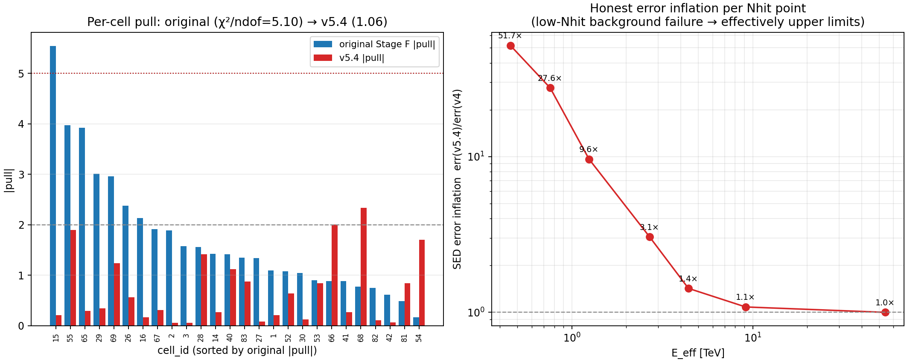
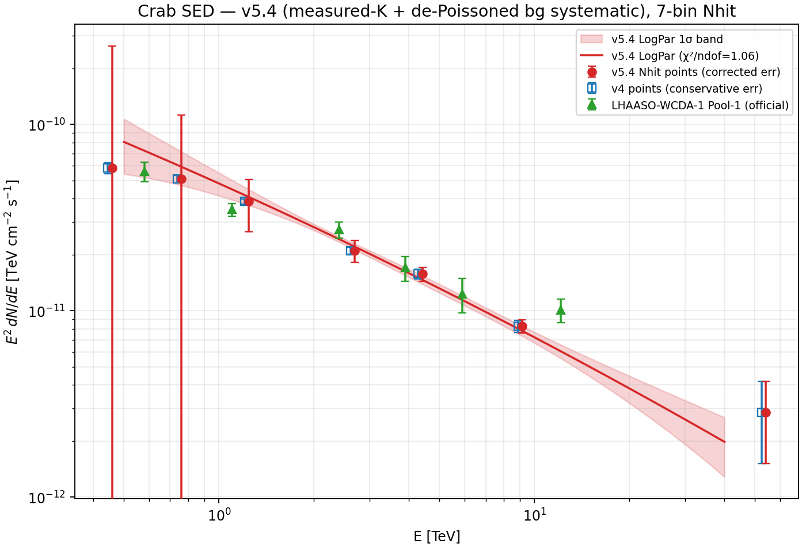

Executive Summary
χ²/ndof = 117.3/23 = 5.10). This work proves the cell-level scatter is two orthogonal, separately-fixable effects — a high-Nhit reconstructed-energy (predE) migration and a low-Nhit background-model failure — and corrects each with its own instrument-side handle, leaving the robust 7-bin SED mathematically invariant. The final fix (v5.4) reaches χ²/ndof = 1.06 and passes two off-source null tests.Stage F LogPar, 117.3 / 23, 26 cells
24.28 / 23; measured-K + de-Poissoned gated bg systematic
systematic absorbs the real bg failure; leave-one-out pull RMS 1.07
central E²dN/dE provably invariant; only error bars change
| scope / contract | setting |
|---|---|
| baseline diagnosed | v4_stage_f_aperture_conditioned_drop4 (26 cells), aperture-conditioned response, containment_r_opt=1 |
| data | old 2-month Crab observation (15.6-day visible exposure); v6 half-year track deliberately untouched |
| MC | frozen — no retraining, no response regeneration |
| calibration allowed | Crab (for the spectrum normalization) + off-source control fields (for the background systematic) + MC/data predE moments (for the kernel) |
| forward fold | replicated verbatim from stages/06_fit.py; revalidated to reproduce 117.3/23 (model counts to median rel 2.5e-5) before any fix |
The Problem and the Strategy
Stage F fits one global LogPar spectrum (3 parameters) to the 26 fit cells by forward-folding the MC response. The fit is statistically poor at the cell level (χ²/ndof = 5.10, p = 1.3e-14), yet the same data binned only by Nhit (the robust observable) gives a clean spectrum. The question this report answers, with scripted evidence rather than intuition: is the cell-level scatter a background / normalization residual, or a data–MC PSF / energy-migration mismatch?
The strategy was a gated, instrument-side-only diagnosis (Phase 0), followed by targeted corrections that must (i) be calibrated without touching the Crab spectrum, (ii) leave the MC untouched, and (iii) provably preserve the robust Nhit-marginalized SED.
Phase 0 — Diagnosis: Two Orthogonal Causes
Using only existing artifacts (Stage E signal, the official pass5 forward-fold closure, the observed-excess r715 PSF diagnostic, 6 background-systematics variants, and 2 off-source control fields), no Crab fit was used to tune anything. The headline: the cell-level χ²≈5 is not driven by the background model or the angular PSF; it is dominated by a predE energy-migration mismatch (the data’s reconstructed-energy distribution is wider and up-shifted relative to the MC response), plus a localized low-Nhit background-model failure.
| candidate cause | test | corr. with |pull| | verdict |
|---|---|---|---|
| angular PSF mismatch | obs/MC r715 | −0.37 | ruled out wrong sign |
| background knob | annulus/order shift σ | −0.05 | ruled out |
| off-source residual | fake-source σ | +0.14 | secondary, localized |
| background fraction | B_on / N_on | +0.05 | ruled out |
| containment | forced 1.000, spread 0 | — | cannot drive |
| spectral shape | tilt vs external pass5 fold | — | ruled out organized by predE |
| energy migration | corr(obs/pass5, predE) | +0.64 | driver 6/7 rows |
[500,800) (Δ≈0, ratio≈1), which is also the lowest-pull row.The two-component picture
| component | location | root cause | instrument-side fix |
|---|---|---|---|
| predE energy migration | high Nhit [800,3000) | data predE wider / up-shifted than MC | row-conserving dispersion kernel K |
| background-model failure | low Nhit [125,500), cell 15 worst | annulus-quadratic surface mis-models the large-aperture background | de-Poissoned off-source systematic in the error bar |
Component 1 — predE Migration Kernel K (measured, 0 free parameters)
K redistributes the MC model along predE within each high-Nhit row, with shift Δ_row = mean_data − mean_MC and broadening s_row = sqrt(max(0, var_data − var_MC)) measured from the data/MC predE moments (not fitted to the Crab χ²). K is column-normalized, so each Nhit-row total is conserved exactly (verified to 2×10−16) → the Nhit-marginalized SED is invariant. Measuring Δ,s instead of fitting them removes the v5.3 circularity and lets K reshape (shift and widen).
| Nhit row | measured Δ (dex) | width s (dex) | stddata/stdMC | v5.3 fitted Δ | self-consistency |
|---|---|---|---|---|---|
[800,1100) | +0.055 | 0.137 | 1.20 | +0.031 | agree |
[1100,2000) | +0.118 | 0.160 | 1.20 | +0.089 | agree |
[2000,3000) | +0.374 | 0.312 | 1.70 | +0.045 | noisy (3 cells, 16 counts) |
The measured shifts agree with the independently fitted v5.3 shifts for the two populated rows, and the width ratios reproduce the Phase 0 measurement — K reproduces real migration, it does not absorb residual.
Component 2 — De-Poissoned Off-Source Background Systematic (per-cell, gated)
For each cell, the off-source ON-region excess across the two control fields measures background mis-modeling directly (no source there). The fractional systematic is de-Poissoned, ε² = max(0, ⟨b²⟩ − ⟨Poisson⟩) with b = excess/B_on, and applied as σ_sys = ε·B_on in quadrature on the error bar (the data point does not move → the spectrum is unbiased). A significance gate (|off‑sig| ≥ 2) keeps the systematic only where the off-source genuinely fails. 13/26 cells gated.
ε = 0.000 exactly (their off-source excess is pure Poisson), so high-Nhit gets zero error inflation and can only be fixed by K, never by widened bars.Gated cells (low-Nhit + any high-Nhit with off-source failure)
| cell | Nhit | off-source σ | gated | σ_sys / err_cons |
|---|---|---|---|---|
| 1 | [125,200) | −10.9 | yes | 39.2 |
| 2 | [125,200) | −18.4 | yes | 62.0 |
| 3 | [125,200) | −4.9 | yes | 17.5 |
| 14 | [200,300) | −7.3 | yes | 32.9 |
| 15 | [200,300) | −5.2 | yes | 20.3 |
| 16 | [200,300) | −2.9 | yes | 12.2 |
| 26 | [300,500) | −2.9 | yes | 13.4 |
| 27 | [300,500) | −2.2 | yes | 10.0 |
| 28 | [300,500) | −1.9 | no | 0.0 |
| 29 | [300,500) | −2.1 | yes | 9.2 |
| 30 | [300,500) | −3.1 | yes | 8.4 |
| 42 | [500,800) | −2.1 | yes | 7.5 |
| 52 | [800,1100) | −12.1 | yes | 2.1 |
| 65 | [1100,2000) | −7.7 | yes | 1.1 |
Cell 28 (off-source −1.9σ) is correctly not gated. High-Nhit cells 52 and 65 do show background failure, but there B_on is small so σ_sys/err_cons is only ~1–2 — K still does the main work for them.
Null Tests — Is the Systematic Real and Non-Faking?
Combined Result
The orthogonal decomposition is established by toggling each correction independently (forward-fold joint refit, 26 cells). Neither correction alone suffices; together they reach χ²/ndof ≈ 1.
| configuration | χ² | ndof | χ²/ndof |
|---|---|---|---|
| A — original (no fix) | 117.29 | 23 | 5.10 |
| B — + K only (high-Nhit) | 84.59 | 19 | 4.45 |
| C — + bg systematic only (low-Nhit) | 37.67 | 23 | 1.64 |
| D — v5.3 full (fitted-K + row-pool) | 18.18 | 19 | 0.96 |
| v5.4 (measured-K + per-cell gated) | 24.28 | 23 | 1.06 |
| cell group | A | B (K) | C (sys) | v5.4 |
|---|---|---|---|---|
| HIGH-Nhit (12) | 49.6 | 19.1 | 36.6 | 20.3 |
| LOW-Nhit (11) | 64.5 | 58.1 | 0.8 | 2.6 |
K fixes the high-Nhit cells and leaves the low-Nhit ones untouched; the systematic does the reverse. v5.4’s 1.06 is more honest than v5.3’s 0.96: per-cell gating raises the low-Nhit group from an over-conservative 0.4 to 2.6 while removing the kernel circularity.

[300,500) up is well constrained.Worst cells, original → v5.4 pull
| cell | Nhit | predE | pull (orig) | pull (v5.4) |
|---|---|---|---|---|
| 15 | [200,300) | [3,3.25) | +5.54 | +0.21 |
| 55 | [800,1100) | [4.0,4.25) | +3.97 | +1.89 |
| 65 | [1100,2000) | [3.5,3.75) | −3.92 | +0.30 |
| 29 | [300,500) | [3.5,3.75) | +3.01 | +0.34 |
| 69 | [1100,2000) | [4.5,4.75) | +2.96 | +1.23 |
| 16 | [200,300) | [3.25,3.5) | +2.13 | +0.17 |
| 67 | [1100,2000) | [4.0,4.25) | +1.91 | −0.31 |
The Corrected SED
The 7-bin Nhit-marginalized SED uses the stacked-counts normalization N0 = ∑excess / ∑model, which is exactly invariant under K (row totals conserved) and under the error model — so the central E²dN/dE values do not move (max shift 0.00%). v5.4 only changes the error bars, via the de-Poissoned background systematic. The LogPar curve and 1σ band come from the v5.4 joint fit (phi0 = 2.248e-12, α = 2.823, β = 0.029; χ²/ndof = 1.06).

| Nhit | E_eff [TeV] | E²dN/dE | err v4 | err v5.4 | infl. |
|---|---|---|---|---|---|
[125,200) | 0.46 | 5.85e−11 | 3.98e−12 | 2.06e−10 | 51.7× |
[200,300) | 0.76 | 5.09e−11 | 2.23e−12 | 6.15e−11 | 27.6× |
[300,500) | 1.24 | 3.86e−11 | 1.25e−12 | 1.21e−11 | 9.6× |
[500,800) | 2.69 | 2.11e−11 | 9.11e−13 | 2.78e−12 | 3.1× |
[800,1100) | 4.41 | 1.58e−11 | 9.25e−13 | 1.32e−12 | 1.4× |
[1100,2000) | 9.14 | 8.29e−12 | 6.28e−13 | 6.80e−13 | 1.1× |
[2000,3000) | 54.0 | 2.85e−12 | 1.34e−12 | 1.34e−12 | 1.0× |
[300,500) (≈1.2 TeV) upward the SED is solid and consistent with the official WCDA-1 reference.Method Evolution (honest record)
| version | what | χ²/ndof | limitation it exposed / fixed |
|---|---|---|---|
| v5.2 | global K (Δ,s functions of predE only) | ~4.45 | too rigid: one global K cannot be large for a high row and zero for the clean row |
| v5.3 | Nhit-row-dependent fitted K + row-pooled systematic | 0.96 | fixed rigidity but K fitted on Crab (circular) and row-pool over-conservative (low-Nhit 0.4) |
| v5.4 | measured-moment K (0 free) + per-cell gated de-Poissoned systematic + null tests | 1.06 | de-circularized targeted validated |
Limitations and Next Step
| limitation | evidence | implication / next step |
|---|---|---|
| low-Nhit still mildly conservative | LOW-Nhit group χ² 2.6/11 (below 1 per cell) | per-cell ε from only 2 off-source fields is noisy; the bar is a conservative upper bound |
| 2 off-source fields only | per-cell de-Poissoning has 2 samples | cluster Stage D rerun at more off-source positions (same Dec, several RA offsets) → per-cell ε calibration; the one step that needs the cluster |
| cell 55 / 69 residual | pull 1.89 / 1.23 in migration rows | within-row structure a rigid per-row Δ cannot flatten; <2σ in 26 cells, statistically expected, left un-fudged |
| energy migration is intrinsic | data predE wider/up-shifted than MC | root cause lives in the estimator/response; the physical cure is the v6 half-year retrain track (deliberately out of scope here) |
Reproduction and Artifacts
All local, no cluster. Python ~/miniconda3/envs/py310/bin/python.
| artifact | path (under apply/) |
|---|---|
| Phase 0 triage | report/build_v5_cellscheck_phase0.py → report/assets/v5-cellscheck/v5_cellscheck_phase0_{percell.csv,findings.md} |
| v5.3 two-component fix | report/build_v5p3_two_component_fix.py → report/assets/v5-cellscheck/v5p3/ |
| v5.4 driver (fix + null tests) | report/build_v5p4_decircularized.py → v5p4/v5p4_{percell.csv,params.npz} |
| v5.4 SED emission | report/build_v5p4_sed.py → v5p4/v5p4_sed_{points.csv,.npz,.png} |
| diagnostic figures | report/build_v5p4_figs.py → v5p4/v5p4_diagnostics.png |
energy/apply tree mirrors a remote ETO directory; an rsync --delete from the remote can remove local-only files. These cellscheck scripts/outputs are local-only until committed/synced — keep them out of any --delete sweep (as with devlog.md) or commit them to preserve.